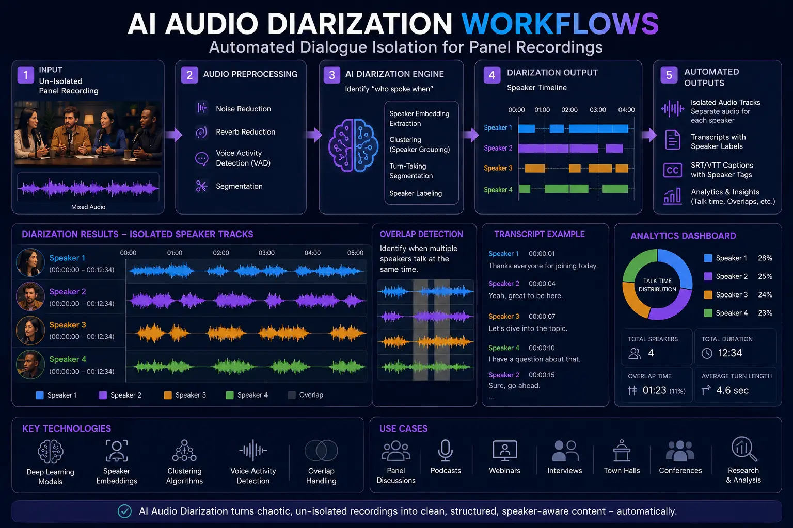
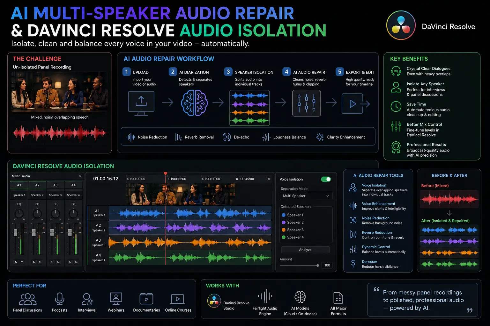

Using AI Audio Diarization to Isolate Overlapping Speakers in Un-Isolated Panel Recordings
The Un-Isolated Panel Recording Challenge
Live corporate roundtables, industry keynotes, executive summits, and panel discussions represent some of the most valuable media assets for modern enterprises. However, capturing high-fidelity audio during live panel events presents severe technical hurdles for videographers and audio engineers. In non-ideal recording environments—such as crowded convention centers, echoey conference halls, or temporary podcast booths—speakers often share tabletop microphones or speak simultaneously over high-gain room mics. This results in severe microphone bleed, acoustic room reflections, and chaotic cross-talk where multiple panelists talk over each other.
Traditionally, when two speakers speak over a single audio channel, repairing the file was virtually impossible. Standard equalizer (EQ) curves, noise gates, and static notch filters operate across global frequency bands; because human vocal ranges share overlapping fundamental frequencies (80 Hz to 255 Hz) and harmonic formants (up to 8 kHz), applying standard filters to mute Speaker B inevitably destroys the vocal timbre and intelligibility of Speaker A. Consequently, video editors were forced to accept muddy, cluttered audio or spend countless tedious hours performing manual spectral repair with mixed success.
The advent of advanced AI Audio Diarization Workflows and Automated Dialogue Isolation has revolutionized post-production pipelines. By harnessing deep neural networks trained on millions of speech patterns, modern AI multi-speaker audio repair models can analyze single-track audio recordings, distinguish distinct acoustic signatures, and cleanly demix overlapping voices into isolated stems. For video producers aiming to deliver broadcast-quality Product Sound Design Videography, mastering these cutting-edge voice separation techniques is now essential for salvaging compromised panel recordings.
The Science Behind AI Audio Diarization & Source Separation
Understanding how modern acoustic AI demixes overlapping dialogue requires exploring the dual mechanics of Speaker Diarization and Blind Source Separation (BSS). Speaker diarization answers the fundamental question of "who spoke when" by partitioning an audio stream into homogeneous segments according to speaker identity. However, when two panelists speak simultaneously, simple segmentation is insufficient—the software must execute complex spectral unmixing to separate the tangled audio waves into independent tracks.
Modern neural architectures, such as Conformer-based neural networks, Recurrent Neural Networks (RNNs), and U-Net time-frequency demixers, examine the high-resolution spectrogram of an audio recording. The AI evaluates critical vocal biometrics:
- Fundamental Frequency (F0) Tracking: The neural model continuously tracks the pitch contours and vocal cord vibration frequencies of each speaker, distinguishing low-pitch baritone voices from higher-pitch vocal resonances.
- Formant Structure Analysis: By analyzing the resonant frequencies of the vocal tract (F1, F2, and F3 formants), the AI creates a distinct acoustic embedding for each speaker on the panel.
- Spectral Masking & Demixing: When two voices overlap, the model calculates time-frequency binary or soft masks. It assigns specific frequency bins to Speaker A and others to Speaker B at millisecond intervals, effectively reconstructing two clean vocal waveforms from one mixed track.
- Transient & Sibilance Recovery: Advanced dialogue cleaning software reconstructs masked consonants (such as "s", "t", "p", and "k" sounds) that were previously obscured by competing crosstalk.
Rather than relying on rigid static rules, these machine-learning algorithms adapt dynamically to changing room acoustics, room reverberation, and speaker distance. Utilizing specialized podcast audio separation plugins allows post-production engineers to achieve surgical precision, turning chaotic multi-speaker panel recordings into broadcast-ready audio stems without artificial phase distortion.
Step-by-Step AI Audio Separation Workflow
Implementing Isolating overlapping voices video editing workflows in commercial video production requires a structured, multi-stage post-production pipeline. Below is the step-by-step framework used by professional sound engineers:
- Phase 1: Ingestion and Pre-Conditioning. Load the raw panel recording into your Digital Audio Workstation (DAW) or Non-Linear Editor (NLE). Apply a gentle high-pass filter (around 75 Hz) to eliminate sub-bass HVAC rumble and low-end mechanical thuds before passing the signal to AI neural processors.
- Phase 2: Speaker Diarization & Profile Mapping. Pass the full audio file through an AI diarization engine (such as PyAnnote, Ultimate Vocal Remover, or specialized NLE extensions). The software scans the timeline, tags each unique speaker profile (e.g., Speaker 1, Speaker 2, Speaker 3), and highlights regions containing simultaneous overlapping speech.
- Phase 3: Neural Overlap Unmixing. Execute AI multi-speaker audio repair algorithms specifically optimized for dialogue separation. The software processes overlapping timeframes, generating discrete audio stems for each identified panelist while filtering out secondary room bleed.
- Phase 4: NLE Stem Integration & Fairlight Isolation. Export the unmixed vocal stems as 24-bit 48kHz WAV files and import them back into your video editing suite. Utilizing DaVinci Resolve audio isolation tools within the Fairlight page allows video editors to fine-tune vocal clarity, suppress residual room ambience, and apply real-time neural dialogue processing directly on individual track strips.
- Phase 5: Dynamic Leveling & Re-Mixing. With each panelist now residing on an isolated track, apply independent gain staging, multiband compression, and vocal de-essing. Level out quiet speakers, tone down dominant talkers, and pan speakers slightly across the stereo field to establish spatial depth.
Surgical Dialogue Intelligibility
Isolate overlapping voices into clear, discrete stems so viewers capture every strategic statement without listening fatigue.
Massive Time Efficiency
Replace tedious manual frame-by-frame spectral cutting with Automated Dialogue Isolation, reducing audio edit turnaround times by up to 80%.
Independent Multitrack Control
Balance volume dynamics, apply custom EQ, and pan individual panelists even when the event was recorded on a single shared room microphone.
Enterprise Production Value
Elevate un-isolated live recordings to pristine broadcast standards essential for high-end Product Sound Design Videography.

Integrating Separation Tools into NLE & DAW Pipelines
Modern post-production editors no longer need to round-trip every audio clip through complex command-line scripts. Top-tier non-linear editors and digital audio workstations have integrated powerful podcast audio separation plugins and neural dialogue repair suites directly into their native environments.
In Blackmagic Design's DaVinci Resolve Studio, the Fairlight engine features advanced DaVinci Resolve audio isolation powered by the DaVinci Neural Engine. Editors can highlight a noisy, overlapping panel track, enable Dialogue Isolator, and adjust the separation strength in real time. The neural network automatically differentiates human speech from ambient room reflection, microphone crosstalk, and secondary voice bleed, allowing editors to clean multi-camera panel shoots instantly within the edit timeline.
For complex audio restoration jobs requiring deep spectral unmixing, standalone dialogue cleaning software such as iZotope RX Advanced, Waves Clarity VX Pro, and Adobe Audition offers granular spectral editing tools. Software like Ultimate Vocal Remover 5 (UVR5) with specialized MDX-Net and Demucs v4 models allows audio engineers to isolate speech stems with zero latency artifacts. Incorporating these specialized tools into post-production sound engineering workflows guarantees that commercial brand videos, executive roundtables, and podcast series retain maximum auditory impact across all playback platforms.
AI Diarization & Repair Tools
- DaVinci Resolve Fairlight Neural Engine.
- iZotope RX Dialogue Match & De-talk.
- Waves Clarity VX Pro & De-Filter.
- Ultimate Vocal Remover (UVR5) MDX-Net.
Core Post-Production Steps
- Spectral noise profiling & pre-filtering.
- Neural speaker diarization & mapping.
- Overlap demixing & stem extraction.
- Phase alignment & dynamic leveling.
Broadcast Master Deliverables
- Isolated 24-bit 48kHz vocal stems.
- ITU-R BS.1770-4 normalized dialogue mix.
- Cleaned stereo & surround sub-mixes.
- High-fidelity corporate archive masters.

Advanced Sound Engineering & Artifact Mitigation
While AI multi-speaker audio repair models are remarkably capable, aggressive neural demixing can occasionally introduce subtle acoustic artifacts—often described as "watery" phase cancellation, metallic high-end ringing, or unnatural room gating. Achieving a truly seamless, natural-sounding audio mix requires seasoned post-production sound engineering techniques.
To eliminate artificial gating and maintain organic room acoustics, engineers recommend blending a controlled layer of clean ambient room tone back into the background of the isolated dialogue stems. This subtle ambient cushion prevents the audio from feeling unnaturally sterile or "dead." Additionally, applying dynamic EQ (such as FabFilter Pro-MB or Soothe2) targets specific resonant frequencies that may have been accentuated during the separation process.
Furthermore, when executing Isolating overlapping voices video editing projects, proper phase alignment across all camera and audio sources is critical. If two lapel mics captured the same overlapping moment with a 15-millisecond delay, phase cancellation will weaken the vocal weight. Utilizing micro-delay alignment tools ensures that all unmixed stems reinforce one another, producing a warm, authoritative vocal tone suitable for premium Product Sound Design Videography.
Conclusion
Un-isolated panel recordings with chaotic overlapping speech no longer mean compromising on video production quality. Through AI Audio Diarization Workflows, Automated Dialogue Isolation, and AI multi-speaker audio repair, media creators can transform messy single-track panel recordings into pristine, independently levelable speaker stems. By integrating DaVinci Resolve audio isolation tools, standalone dialogue cleaning software, and specialized podcast audio separation plugins into your pipeline, your agency can salvage high-stakes panel discussions and deliver broadcast-ready audio.
At The PhD Ads in Madurai, we specialize in high-end video production, Product Sound Design Videography, and expert post-production sound engineering. Whether you are producing enterprise event keynotes, executive roundtables, or commercial brand campaigns, our team leverages state-of-the-art AI audio workflows to ensure your brand's voice is heard with crystal-clear precision.
Key Topics
Ready to Isolate Overlapping Voices into Broadcast-Quality Panel Audio?
At The PhD Ads in Madurai, we combine advanced AI Audio Diarization Workflows, Automated Dialogue Isolation, and expert post-production sound engineering to transform un-isolated panel recordings into pristine commercial video assets.
Email: team@e2o.in